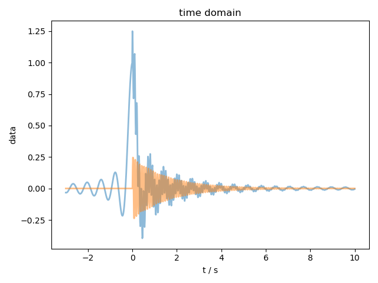
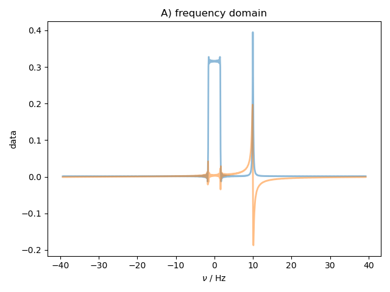
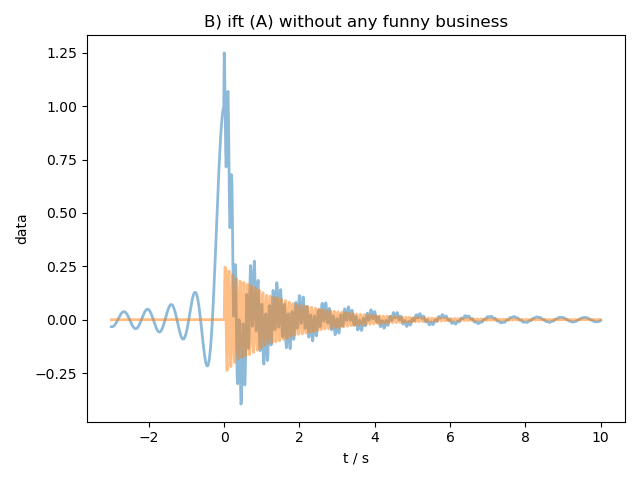
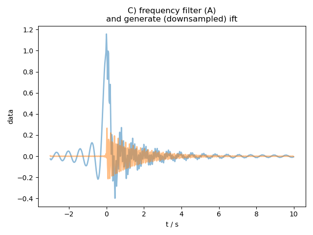
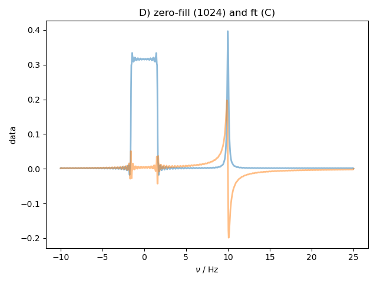
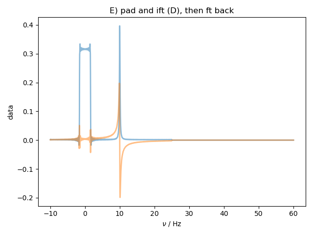

Note
Click here to download the full example code
Fourier Padding¶
Demonstrates that we can zero fill (pad) either the Fourier Transform or the Inverse Fourier Transform, and that everything works out as expected.
- 
- 
- 
- 
- 
- 

Out:
C:\Users\johnf\notebook\pyspecdata\examples\fourier_padding.py:17: RuntimeWarning: invalid value encountered in true_divide
data = data.fromaxis('t',lambda x: where(x == 0,1,sin(x/sinc_width)/(x/sinc_width))) # `where` catches nan exception
c:\users\johnf\notebook\pyspecdata\pyspecdata\fourier\ft.py:172: FutureWarning: Using a non-tuple sequence for multidimensional indexing is deprecated; use `arr[tuple(seq)]` instead of `arr[seq]`. In the future this will be interpreted as an array index, `arr[np.array(seq)]`, which will result either in an error or a different result.
newdata[targetslice] = self.data
c:\users\johnf\notebook\pyspecdata\pyspecdata\fourier\ift.py:173: FutureWarning: Using a non-tuple sequence for multidimensional indexing is deprecated; use `arr[tuple(seq)]` instead of `arr[seq]`. In the future this will be interpreted as an array index, `arr[np.array(seq)]`, which will result either in an error or a different result.
newdata[targetslice] = self.data
c:\users\johnf\notebook\pyspecdata\pyspecdata\fourier\ift.py:173: FutureWarning: Using a non-tuple sequence for multidimensional indexing is deprecated; use `arr[tuple(seq)]` instead of `arr[seq]`. In the future this will be interpreted as an array index, `arr[np.array(seq)]`, which will result either in an error or a different result.
newdata[targetslice] = self.data
# from JF notebook sec:fourier_padding_test
from pylab import *
from pyspecdata import *
fl = figlist_var()
t = r_[-3:10:1024j]
t -= t[argmin(abs(t))] # to be sure that an index exactly equals zero
data = nddata(empty_like(t),[-1],['t']).setaxis('t',t)
data.set_units('t','s') # set the units to s, which are automatically converted to Hz upon FT
sinc_width = 0.1
data = data.fromaxis('t',lambda x: where(x == 0,1,sin(x/sinc_width)/(x/sinc_width))) # `where` catches nan exception
#{{{ add a simple Lorentzian peak
R = 0.1
f_center = 10.
A = 0.25
data += A*data.fromaxis('t',lambda x: where(x>=0,exp(-2*pi*x*R+1j*2*pi*x*10.),0)) # `where` acts as heaviside
#}}}
default_plot_kwargs = dict(alpha = 0.5, linewidth = 2)
fl.next('time domain')
fl.plot(data,**default_plot_kwargs)
fl.plot(data.runcopy(imag),**default_plot_kwargs)
fl.next('A) frequency domain')
data.ft('t',shift = True)
fl.plot(data,**default_plot_kwargs)
fl.plot(data.runcopy(imag),**default_plot_kwargs)
fl.next('B) ift (A) without any funny business')
data_save = data.copy()
data.ift('t')
fl.plot(data,**default_plot_kwargs)
fl.plot(data.runcopy(imag),**default_plot_kwargs)
fl.next('C) frequency filter (A)\nand generate (downsampled) ift')
data = data_save['t':(-10,25)]
data_save = data.copy()
data.ift('t')
fl.plot(data,**default_plot_kwargs)
fl.plot(data.runcopy(imag),**default_plot_kwargs)
fl.next('D) zero-fill (1024) and ft (C)')
data.ft('t',pad = 1024)
data_zf_ft = data.copy()
fl.plot(data,**default_plot_kwargs)
fl.plot(data.runcopy(imag),**default_plot_kwargs)
fl.next('E) pad and ift (D), then ft back')
data = data_zf_ft
data.ift('t',pad = 2048)
data.ft('t')
fl.plot(data,**default_plot_kwargs)
fl.plot(data.runcopy(imag),**default_plot_kwargs)
fl.next('F) ift (C before ift),\nzero-filling up to 1024')
data = data_save
data.ift('t',pad = 1024)
fl.plot(data,**default_plot_kwargs)
fl.plot(data.runcopy(imag),**default_plot_kwargs)
fl.show('ft_demo_150820.pdf')
Total running time of the script: ( 0 minutes 1.072 seconds)